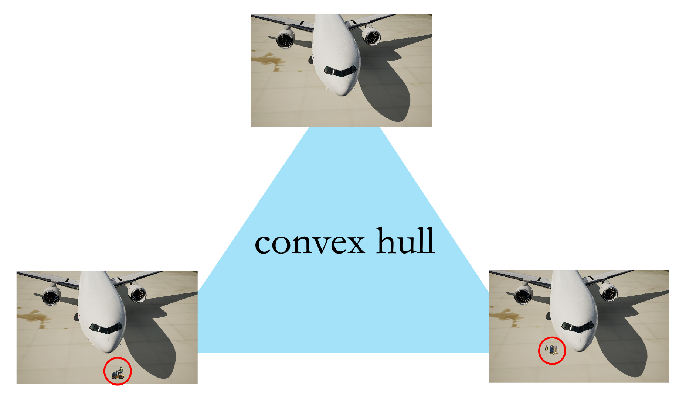
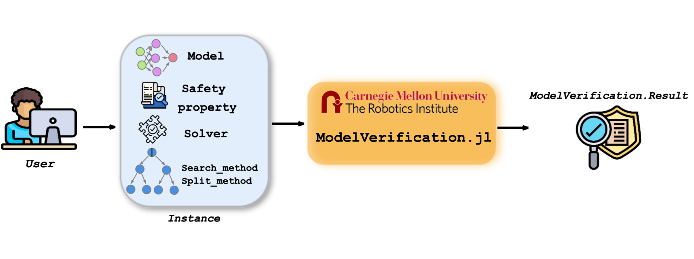
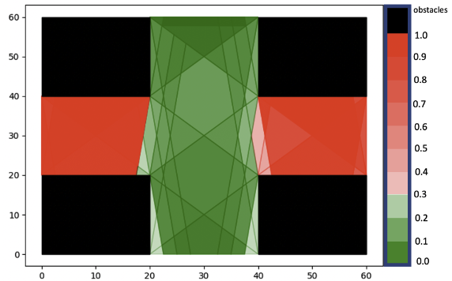
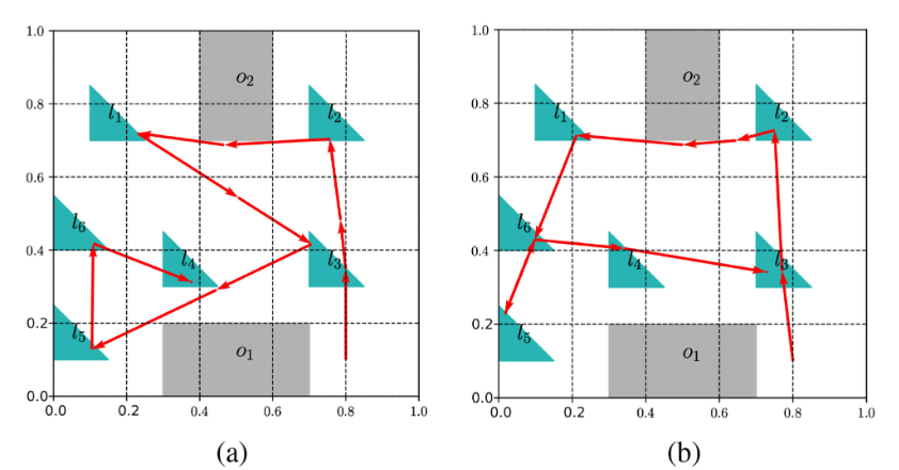
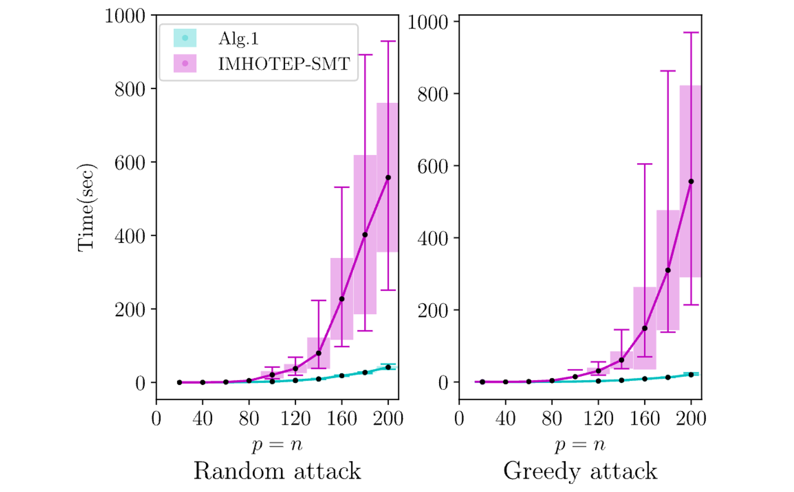
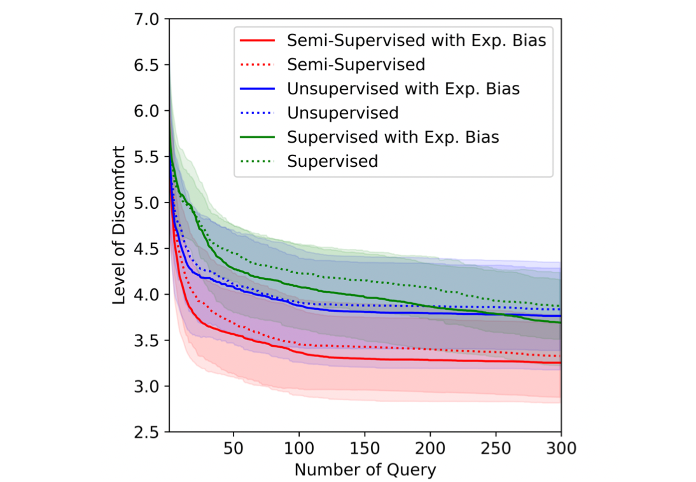
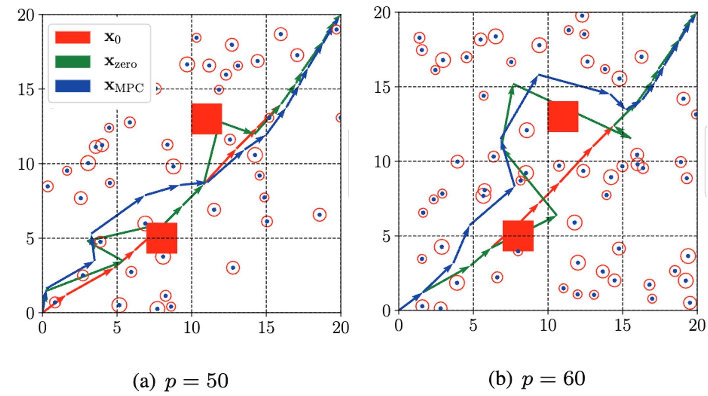
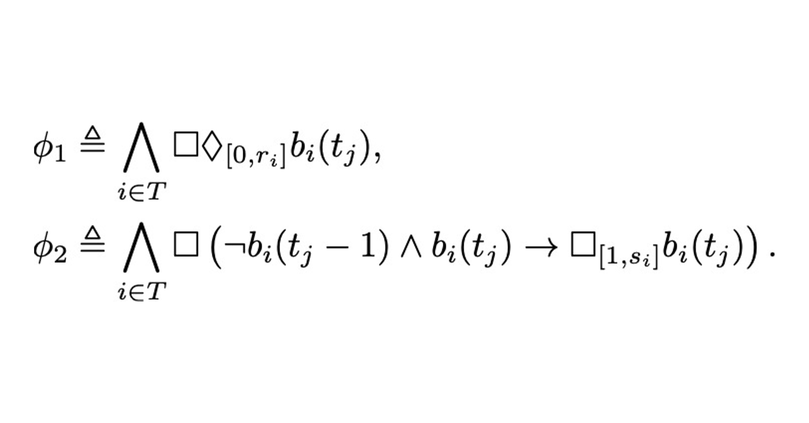
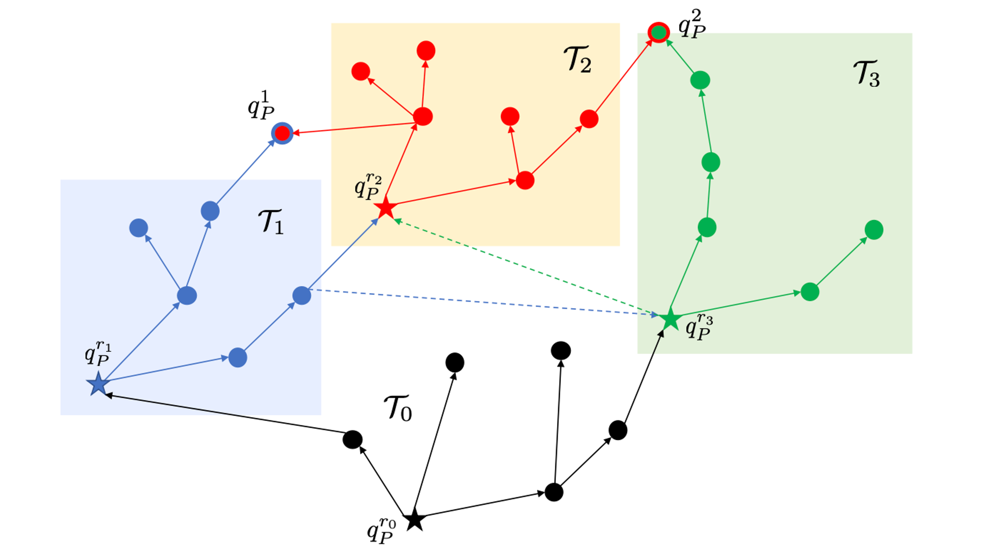

|
Xusheng Luo I'm currently a Associate Research Scientist at Intelligent Control Lab of Robotics Institute, Carnegie Mellon University, working with Dr. Changliu Liu, starting from April 2023. I received the Ph.D. degree in Mechanical Engineering from Duke University in December 2020, under the supervision of Dr. Michael M. Zavlanos. Prior to it, I received the B.S. and M.S. degrees in Aerospace Engineering from the Harbin Institute of Technology, China, in 2015 and 2017, respectively.
NEW
Joining NC State University as Assistant Professor, Fall 2026
I will join the Department of Mechanical and Aerospace Engineering at NC State University as a Tenure-Track Assistant Professor in Fall 2026, where I will direct the Intelligent Robotics and Trustworthy Autonomy (IRTA) Lab. I am actively looking for motivated Ph.D. students to join the lab starting in Spring 2027 or Fall 2027. Please see the Prospective Students page for more details. |
{kind=link}
News and Updates
|
ResearchMy research aims to build the next generation of intelligent, trustworthy, and human-centered robotic systems. I am particularly interested in developing robots that can understand high-level goals, learn from data and interaction, reason over long-horizon tasks, coordinate with other robots, and operate safely in complex real-world environments. My work lies at the intersection of robotics, control theory, artificial intelligence, machine learning, and formal methods, with a central focus on bridging mathematical rigor and data-driven intelligence. Building on this vision, my future research focuses on several closely connected directions:
Neuro-symbolic Robot Planning & Learning
Combining symbolic reasoning, formal task structures, and learning-based models to enable robots to understand high-level goals, reason over long-horizon tasks, and generate interpretable plans.
Trustworthy Robot Learning & Embodied Intelligence
Enabling robots to learn interpretable physical skills that remain safe, robust, and reliable in real-world environments.
Trustworthy & Assured Autonomy
Developing foundations for specification, verification, certification, and correct-by-construction design for autonomous systems.
Language-guided & Human-centered Robotics
Enabling robots to understand human intent, explain their behavior, and collaborate safely with non-expert users.
Scalable Multi-robot Systems
Developing methods for task allocation, coordination, and planning under complex high-level objectives.
Real-World Applications
Grounding trustworthy autonomy in smart manufacturing, human-robot collaboration, mobile manipulation, autonomous inspection, warehouse automation, service robotics, and field robot teams.
|
PublicationsRepresentative papers are highlighted (* denotes equal contribution). |
|
Emergent Neural Automaton Policies: Learning Symbolic Structure from Visuomotor Trajectories
Yiyuan Pan*, Xusheng Luo*, Hanjiang Hu, Peiqi Yu, Changliu Liu Robotics: Science and Systems (RSS), 2026 |
|
From Decoupled to Coupled: Robustness Verification for Learning-based Keypoint Detection with Joint Specifications
Xusheng Luo, Changliu Liu International Conference on Neuro-Symbolic Systems (NeuS), 2026 |
|
|
Simultaneous Task Allocation and Planning for Multi-Robots under Hierarchical Temporal Logic Specifications
Xusheng Luo, Changliu Liu IEEE Transaction on Robotics (TRO), 2025 ICRA Workshop on Robot Safety, 2025 |
|
|
Hierarchical Temporal Logic Task and Motion Planning for Multi-Robot Systems
Zhongqi Wei*, Xusheng Luo*, Changliu Liu Robotics: Science and Systems (RSS), 2025 |
|
|
 |
Certifying Robustness of Learning-Based Keypoint Detection and Pose Estimation Methods
Xusheng Luo, Tianhao Wei, Simin Liu, Ziwei Wang, Luis Mattei-Mendez, Taylor Loper, Joshua Neighbor, Casidhe Hutchison, Changliu Liu ACM Transaction on Cyber-Physical Systems (T-CPS), 2025 ICRA Workshop on Public Trust in Autonomous Systems (PTAS), 2025 |
|
 |
ModelVerification.jl: a Comprehensive Toolbox for Formally Verifying Deep Neural Networks
Tianhao Wei, Luca Marzari, Kai S. Yun, Hanjiang Hu, Peizhi Niu, Xusheng Luo, Changliu Liu International Conference on Computer Aided Verification (CAV), 2025 |
|
NL2HLTL2PLAN: Scaling Up Natural Language Understanding for Multi-Robots Through Hierarchical Temporal Logic Task Representation
Shaojun Xu*, Xusheng Luo*, Yutong Huang, Letian Leng, Ruixuan Liu, Changliu Liu IEEE Robotics and Automation Letters (RA-L), 2025 CoRL Workshop on Learning Effective Abstractions for Planning (LEAP), 2023 |
|
|
Decomposition-based Hierarchical Task Allocation and Planning for Multi-Robots under Hierarchical Temporal Logic Specifications
Xusheng Luo, Shaojun Xu, Ruixuan Liu, Changliu Liu IEEE Robotics and Automation Letters (RA-L), 2024, with presentation at ICRA 2025 IROS Workshop on Formal Methods Techniques in Robotics Systems: Design and Control, 2023 |
|

|
Simulation-aided Learning from Demonstration for Robotic LEGO Construction
Ruixuan Liu, Alan Chen, Xusheng Luo, Changliu Liu arXiv, 2023 |
|
Temporal Logic Task Allocation in Heterogeneous Multi-robot Systems
Xusheng Luo, Michael M Zavlanos IEEE Transactions on Robotics (T-RO), 2022 |
|
|
 |
Formal Verification of Stochastic Systems with ReLU Neural Network Controller
Shiqi Sun, Yan Zhang, Xusheng Luo, Panagiotis Vlantis, Miroslav Pajic, Michael M Zavlanos ICRA, 2022 |
|
 |
An abstraction-free Method for Multi-robot Temporal Logic Optimal Control Synthesis
Xusheng Luo, Yiannis Kantaros, Michael M Zavlanos IEEE Transactions on Robotics (T-RO), 2021 |
|
 |
An optimal Graph-Search Method for Secure State Estimation
Xusheng Luo, Miroslav Pajic, Michael M Zavlanos Automatica, 2021 |
|
 |
Human-in-the-loop Robot Planning with Non-contextual Bandit Feedback
Yijie Zhou, Yan Zhang, Xusheng Luo, Michael M Zavlanos IEEE Conference on Decision and Control (CDC), 2021 |
|
 |
Socially-aware Robot Planning via Bandit Human Feedback
Xusheng Luo*, Yan Zhang*, Michael M Zavlanos ACM International Conference on Cyber-Physical Systems (ICCPS), 2020 |
|
 |
Single-agent Indirect Herding of Multiple Targets using Metric Temporal Logic Switching
Duc Le, Xusheng Luo, Leila J. Bridgeman, Michael M Zavlanos, Warren E. Dixon IEEE Conference on Decision and Control (CDC), 2020 |
|
 |
Transfer Planning for Temporal Logic Tasks
Xusheng Luo, Michael M Zavlanos IEEE Conference on Decision and Control (CDC), 2019 |
Academic Service
Associate Editor
ICRA 2026
Journal Reviewing
T-RO, T-PAMI, T-ASE, T-CNS, TMECH, RA-L, J. Dyn. Syst. Meas. Control, L-CSS
Conference Reviewing
RSS, ICRA, IROS, CoRL-LEAP, ACC, ICCPS, UR, MECC
Session Chair
Verification and Formal Methods, ICRA 2025
Workshop Organizer
Foundation Models for Control (FM4Control): Bridging Language, Vision, and Control Workshop, MECC 2025
Learning and Formal Methods for Robotics (LAFR), IROS 2026 |